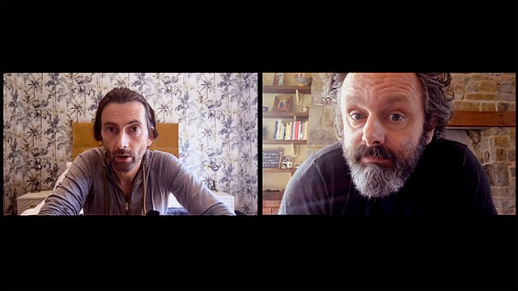

J’ai tout récemment terminé la première saison de High Fidelity, adaptation sortie l’an passé du roman du même nom de Nick Hornby. Ce dernier m’avait beaucoup plu il y a une grosse dizaine petite quinzaine d’années, au point de compter parmi mes livres préférés à une époque. Cette adaptation marque d’emblée deux différences majeures : d’une part le protagoniste du roman, Rob (prototype du mec célibataire un peu loser), est cette fois interprété par Zoë Kravitz, et l’action se déroule à New York et non plus à Londres. Pour le reste, c’est pareil : Rob tient un magasin de vinyles, vit mal la fin de sa dernière relation amoureuse, et fait des listes (à commencer par celle de ses pires séparations). Elle peut heureusement compter sur deux personnages particulièrement attachants : Cherise et Simon, ses amis et employés du magasin. Le tout baigne constamment dans la musique (rock principalement, mais pas uniquement) et, si les références sont évidemment nombreuses, la série prend garde à ne pas perdre ses spectateurs et spectatrices moins au fait de l’histoire de la pop des soixante dernières années. Pour autant, j’ai quand même appris des choses sur le disco ainsi que l’existence de William Onyeabor, et j’en suis très content. Cela me rappelle bien l’esprit du roman, que j’avais su apprécier malgré ma méconnaissance de la vaste majorité des artistes balancés par le narrateur tout au long de l’histoire. Bref, j’ai passé un très bon moment devant cette réinterprétation, qui renouvelle largement le récit original sans le trahir.
Enfin, je m’en voudrais de ne pas évoquer la série britannique Staged, tournée exclusivement en vidéoconférence sur fond de pandémie de Covid-19 et de confinement au Royaume-Uni. Elle est portée par David Tennant et Michael Sheen (qu’on a pu déjà voir récemment dans Good Omens, la belle adaptation du livre de Neil Gaiman), jouant leurs propres rôles, qui essaient laborieusement de répéter une pièce de théâtre par écrans interposés. Evidemment, les deux amis passent surtout leur temps à discuter de leurs vies, à s’engueuler et à ressasser des angoisses existentielles pour oublier l’épidémie qui fait rage à l’extérieur. Ce duo brillant est accompagné de Georgia Tennant et d’Anna Lundberg (épouses respectives de David Tennant et Michael Sheen) et d’un cortège d’autres acteurs et actrices qu’il serait vraiment très dommage de manquer. Un tas de talent mis en commun pour une série (de deux saisons déjà) à la fois très drôle, cathartique et même parfois touchante.